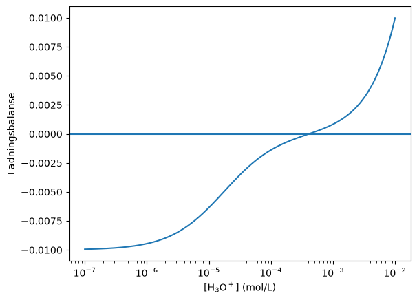
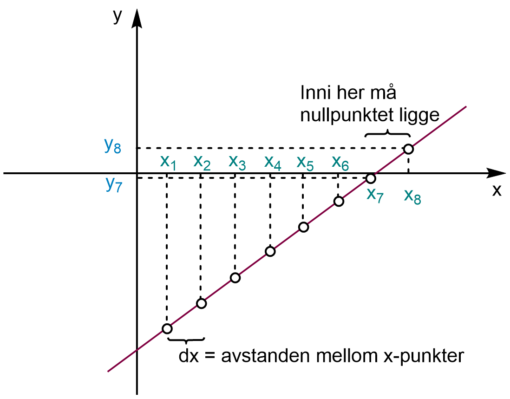
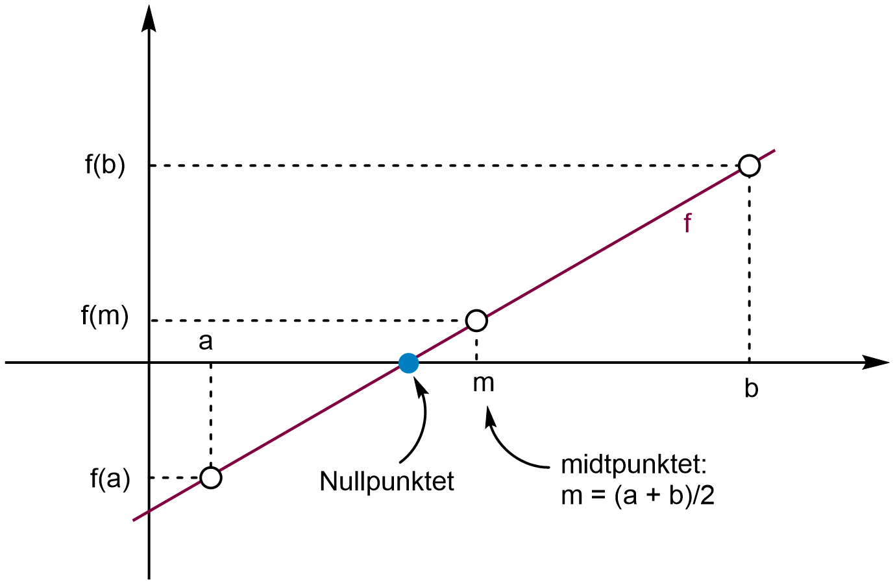
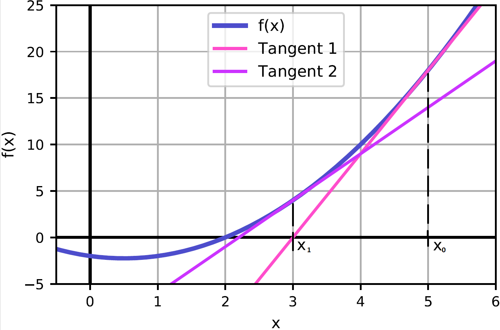

Likninger og nullpunkter#
Læringsutbytte
Etter å ha arbeidet med denne delen av emnet, skal du kunne:
forklare hva et nullpunktsproblem er, og formulere likninger som \(f(x)=0\)
forklare den teoretiske bakgrunnen for halveringsmetoden og Newtons metode
implementere metodene med enkel Python-kode
bruke toleranse til å kontrollere en numerisk beregning
drøfte styrker, svakheter og konvergens for metodene
bruke ferdige nullpunktsløsere i SciPy på kjemiske problemer
Likninger som nullpunktsproblemer#
Å løse en likning og å finne et nullpunkt er egentlig det samme problemet skrevet på to ulike måter. Hvis vi har
kan vi flytte alt over på én side:
Et nullpunkt er en verdi av \(x\) der funksjonsverdien er 0. Å løse likningen \(g(x)=h(x)\) betyr derfor å finne den verdien av \(x\) som gjør \(f(x)=0\). Det er dette vi mener når vi sier at vi formulerer likningen som et nullpunktsproblem.
For andregradslikninger kjenner vi en egen løsningsformel. For mer kompliserte likninger finnes det ikke alltid et praktisk analytisk uttrykk for løsningen. Numeriske metoder er mer generelle: De prøver i stedet å nærme seg løsningen steg for steg.
Et kjemisk eksempel: pH i en svak syre#
Vi bruker en 0,010 M løsning av eddiksyre som eksempel. For en enprotisk svak syre kan vi kombinere massebalansen for protonert og deprotonert form (\(C=[\mathrm{HA}]+[\mathrm{A^-}]\)) og syrekonstanten og skrive
Hvor kommer uttrykket for \([\mathrm{A^-}]\) fra?
\(C\) er totalkonsentrasjonen, altså den du veier inn. Syra forsvinner ikke, den fordeler seg bare på to former:
Dette er massebalansen. Merk at \(C\neq[\mathrm{HA}]\), med mindre nesten ingenting har dissosiert.
Syrekonstanten gir \([\mathrm{HA}]=\dfrac{[\mathrm{H_3O^+}][\mathrm{A^-}]}{K_a}\). Setter vi det inn i massebalansen og faktoriserer ut \([\mathrm{A^-}]\):
som løst for \([\mathrm{A^-}]\) gir uttrykket over. Brøken er andelen av syra som foreligger deprotonert ved en gitt pH. Ved \(\mathrm{pH}=\mathrm{p}K_a\) er den \(1/2\).
Ladningsbalansen er
og vannets ionprodukt gir
Hvis vi setter \(h=[\mathrm{H_3O^+}]\), kan hele problemet samles i én funksjon:
pH-en finnes når ladningsbalansen er oppfylt, altså når \(f(h)=0\). Vi trenger med andre ord ikke isolere \(h\) algebraisk. Det holder at vi kan beregne \(f(h)\) og lete etter nullpunktet.
Før vi prøver å løse en likning numerisk, er det ofte lurt å visualisere funksjonen. En graf kan fortelle oss omtrent hvor nullpunktet ligger, om det finnes flere nullpunkter, og hvilke startverdier som kan være fornuftige:
import numpy as np
import matplotlib.pyplot as plt
C = 0.010
Ka = 1.75e-5
Kw = 1.0e-14
def ladningsbalanse(h):
A_minus = C * Ka / (h + Ka)
OH = Kw / h
return h - A_minus - OH
h = np.logspace(-7, -2, 500)
plt.semilogx(h, ladningsbalanse(h))
plt.axhline(0)
plt.xlabel(r"$[\mathrm{H_3O^+}]$ (mol/L)")
plt.ylabel("Ladningsbalanse")
plt.show()

Fra graf til algoritme#
For å finne nullpunktet så presist som mulig, må vi ha en algoritme. En svært enkel idé er å starte ved en verdi \(x\) og flytte oss bortover grafen med en fast steglengde \(dx\). For hvert steg sammenlikner vi fortegnet til \(f(x)\) og \(f(x+dx)\). Hvis fortegnet skifter, må et nullpunkt ligge mellom punktene, så lenge funksjonen er kontinuerlig.
{kind=link}

I figuren har \(f(x_7)\) og \(f(x_8)\) motsatt fortegn. Nullpunktet må derfor ligge et sted mellom \(x_7\) og \(x_8\). Vi kan bruke midtpunktet som et første estimat.
Dette er intuitivt, men ikke særlig effektivt. Hvis \(dx\) er stort, blir svaret grovt. Hvis \(dx\) er lite, må vi gå gjennom svært mange punkter. Ideen om fortegnsskifte er likevel viktig, for den leder direkte til en metode som er mer robust og effektiv, nemlig halveringsmetoden. Denne skal vi se på om litt.
def f(x):
return x**2 - x - 2
x = -5
x_slutt = 5
dx = 0.5
while x < x_slutt and f(x)*f(x + dx) > 0:
x = x + dx
nullpunkt = (x + (x + dx))/2
print("Et første estimat er x =", nullpunkt)
Et første estimat er x = -1.25
Halveringsmetoden#
I stedet for å gå gjennom hele intervallet med like store steg kan vi være smartere. Vi starter med et intervall \([a,b]\) der \(f(a)\) og \(f(b)\) har motsatt fortegn. Så deler vi intervallet i to og kaster den halvparten som ikke kan inneholde nullpunktet.
La oss først se på den enkleste mulige koden. Her velger vi bevisst en funksjon med et nullpunkt som algoritmen kan treffe nøyaktig, slik at selve ideen er lett å følge.
def f(x):
return 2*x - 2
a = -5
b = 5
m = (a + b)/2
while f(m) != 0:
if f(a)*f(m) < 0:
b = m
elif f(b)*f(m) < 0:
a = m
m = (a + b)/2
print("Nullpunktet er x =", m)
Nullpunktet er x = 1.0
Studer koden linje for linje. Hver runde gjør intervallet halvparten så stort. Det er derfor metoden kalles halveringsmetoden.
Mer generelt går metoden slik:
Velg et intervall \([a,b]\) der \(f(a)\) og \(f(b)\) har motsatt fortegn.
Finn midtpunktet
Undersøk hvilken av halvdelene \([a,m]\) eller \([m,b]\) som fortsatt har et fortegnsskifte.
Behold denne halvdelen og gjenta.
{kind=link}

Figuren viser to runder. Poenget er ikke at vi kjenner nullpunktet på forhånd, men at vi hele tiden vet hvilken halvdel det må ligge i.
Fra eksakt likhet til toleranse#
I reelle numeriske problemer bør vi ikke vente på at f(m) == 0. Flyttall og kompliserte funksjoner gjør at vi ofte aldri treffer null helt nøyaktig. I stedet bestemmer vi hvor nær null som er godt nok. Dette kalles en toleranse.
def f(x):
return x**2 - x - 2
a = 0
b = 5
toleranse = 1E-8
m = (a + b)/2
while abs(f(m)) > toleranse:
if f(a)*f(m) < 0:
b = m
elif f(b)*f(m) < 0:
a = m
m = (a + b)/2
print("Nullpunktet er x =", m)
print("f(x) =", f(m))
Nullpunktet er x = 2.000000001862645
f(x) = 5.587935447692871e-09
Nå har vi først forstått algoritmen som en konkret løkke. Da er det naturlig å pakke den inn i en funksjon slik at vi kan bruke den på flere problemer uten å skrive koden på nytt.
def halveringsmetoden(f, a, b, tol=1E-10, maks_iterasjoner=100):
i = 0
m = (a + b)/2
while i < maks_iterasjoner and abs(f(m)) > tol:
if f(a)*f(m) < 0:
b = m
elif f(b)*f(m) < 0:
a = m
m = (a + b)/2
i = i + 1
if i == maks_iterasjoner:
print("Maks antall iterasjoner er nådd.")
return m, i
Vi kan nå bruke den samme funksjonen på pH-problemet vårt:
h_null, antall = halveringsmetoden(ladningsbalanse, 1e-7, 1e-2)
pH = -np.log10(h_null)
print(f"[H3O+] = {h_null:.6e} mol/L")
print(f"pH = {pH:.3f}")
print("Iterasjoner:", antall)
[H3O+] = 4.096715e-04 mol/L
pH = 3.388
Iterasjoner: 26
Prøv selv#
Fullfør halveringsmetoden i editoren og bruk den til å finne pH i den svake syra.
Newtons metode#
Halveringsmetoden utnytter at nullpunktet ligger mellom to punkter. Newtons metode bruker en annen idé: Tangenten i ett punkt kan brukes til å gjette hvor nullpunktet ligger.
Velg et startgjett \(x_0\).
Tegn eller tenk deg tangenten i \((x_0,f(x_0))\).
Finn hvor tangenten skjærer x-aksen. Dette blir neste gjett, \(x_1\).
Gjenta prosessen med tangenten i det nye punktet.
{kind=link}

Figuren viser hvorfor metoden ofte nærmer seg nullpunktet mye raskere enn halveringsmetoden.
La oss utlede formelen. Tangenten gjennom \((x_n,f(x_n))\) har stigning \(f'(x_n)\):
Vi vil finne tangentens nullpunkt, så vi setter \(y=0\):
Løser vi med hensyn på \(x\), får vi neste estimat:
Igjen begynner vi med den enkleste mulige implementeringen før vi lager en generell funksjon.
def f(x):
return x**2 - x - 2
def fder(x):
return 2*x - 1
x = 5
toleranse = 1E-8
while abs(f(x)) > toleranse:
x = x - f(x)/fder(x)
print("Nullpunktet er x =", x)
Nullpunktet er x = 2.000000000698492
Når algoritmen er forståelig som en enkel løkke, kan vi pakke den inn i en funksjon:
def newtons_metode(f, fder, x, tol=1E-10):
while abs(f(x)) > tol:
x = x - f(x)/fder(x)
return x
Newtons metode trenger bare ett startgjett og konvergerer ofte raskt. Ulempen er at vi trenger den deriverte, og et uheldig startgjett kan føre oss til feil nullpunkt eller gjøre at metoden ikke konvergerer. Her er det viktigere å forstå begrensningen enn å bygge omfattende feilhåndtering inn i den første koden.
Senere, når vi bruker ferdige bibliotekfunksjoner, får vi mer robusthet og informasjon om hvorvidt metoden faktisk konvergerte.
Underveisoppgave
Prøv andre startverdier. Hvilke startverdier fører til et nullpunkt, og hvilke gir problemer? Hva forteller dette om forskjellen mellom halveringsmetoden og Newtons metode?
Ferdige løsere i SciPy#
Når vi har forstått prinsippet, er det vanlig å bruke testede algoritmer fra numeriske biblioteker. scipy.optimize.root_scalar samler flere metoder for én-dimensjonale nullpunktsproblemer.
from scipy.optimize import root_scalar
bisect_resultat = root_scalar(ladningsbalanse, bracket=[1e-7, 1e-2], method="bisect")
def d_ladningsbalanse(h):
return 1 + C*Ka/(h + Ka)**2 + Kw/h**2
newton_resultat = root_scalar(ladningsbalanse, x0=4e-4, fprime=d_ladningsbalanse, method="newton")
print("Halvering:")
print(" konvergert:", bisect_resultat.converged)
print(" iterasjoner:", bisect_resultat.iterations)
print(" pH:", -np.log10(bisect_resultat.root))
print("\nNewton:")
print(" konvergert:", newton_resultat.converged)
print(" iterasjoner:", newton_resultat.iterations)
print(" pH:", -np.log10(newton_resultat.root))
Halvering:
konvergert: True
iterasjoner: 33
pH: 3.387564221805658
Newton:
konvergert: True
iterasjoner: 3
pH: 3.3875642210277825
Hvilken metode skal vi velge?#
Situasjon |
Et naturlig valg |
|---|---|
Vi kjenner et intervall med fortegnsskifte |
Halvering eller en annen bracket-metode |
Vi har en god startverdi og kjenner den deriverte |
Newton |
Vi vil ha en robust ferdig løser |
|
Det kan finnes flere nullpunkter |
Plott eller skann området først |
Det viktigste er ikke bare å få et tall, men å kunne kontrollere at tallet faktisk løser det kjemiske problemet.
Numerisk arbeidsflyt
Formuler kjemien som \(f(x)=0\).
Undersøk funksjonen og velg et fornuftig søkeområde.
Velg metode, toleranse og eventuelt startgjett.
Kontroller at metoden konvergerte.
Sett løsningen tilbake i modellen og vurder om den er kjemisk rimelig.
Kort oppsummering#
Likninger kan formuleres som nullpunktsproblemer.
Halveringsmetoden er robust når vi har et fortegnsskifte.
Newtons metode kan være rask, men er mer følsom for startgjetning og den deriverte.
Toleranse og maks antall iterasjoner gjør beregningen kontrollerbar.
SciPy gir ferdige løsere, men vi bør fortsatt forstå hva slags problem vi gir dem.
Oppgaver#
Oppgave 1 – pH i en svak syre
Bruk halveringsmetoden til å finne pH i 0,0250 M eddiksyre med \(K_a=1.75\cdot10^{-5}\). Sammenlikn med tilnærmingen \([\mathrm{H_3O^+}]\approx\sqrt{K_aC}\). Hvor stor er forskjellen?
Oppgave 2 – velg metode
Du skal løse tre problemer:
En funksjon har et kjent fortegnsskifte mellom 2 og 3, men den deriverte er vanskelig å beregne.
Du kjenner en god startverdi og både \(f(x)\) og \(f'(x)\) er enkle å beregne.
Du mistenker at funksjonen har tre nullpunkter i intervallet \([-5,5]\).
Velg en arbeidsmåte for hvert tilfelle og begrunn valget.
Oppgave 3 – flere nullpunkter
Finn alle løsningene til \(x^5=5x^3+3\). Plott først nullpunktsfunksjonen. Bruk deretter halveringsmetoden eller root_scalar på passende delintervaller.
Oppgave 4 – Newton og startgjett
Undersøk \(f(x)=x^3-2x+2\) med Newtons metode. Test minst fem ulike startverdier. Forklar hvorfor samme metode kan lykkes fra én startverdi og mislykkes fra en annen.
Oppgave 5 – kjemisk likevekt
For reaksjonen \(\mathrm{A \rightleftharpoons B}\) starter vi med 1,00 M A og 0 M B. Ved likevekt er \([B]=x\) og \([A]=1-x\). La \(K=3.5\) og formuler likningen \(K=[B]/[A]\) som et nullpunktsproblem. Finn \(x\) numerisk, og kontroller løsningen analytisk.
Oppgave 6 – temperatur der en prosess skifter spontanitet
Anta at \(\Delta H=45.0\) kJ/mol og \(\Delta S=125\) J/(mol K) er konstante i et temperaturintervall. Formuler \(\Delta G(T)=\Delta H-T\Delta S=0\) som et nullpunktsproblem og finn temperaturen. Denne likningen er enkel å løse analytisk; bruk den derfor til å kontrollere den numeriske metoden.